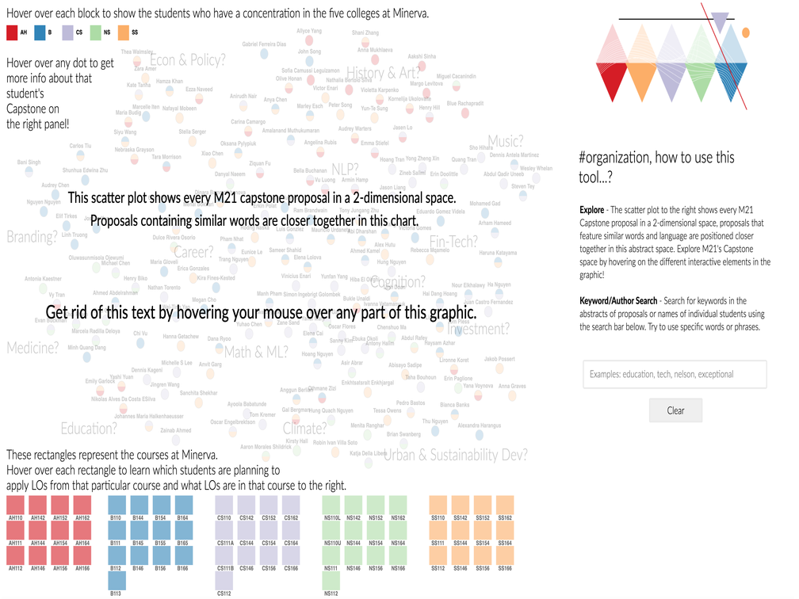
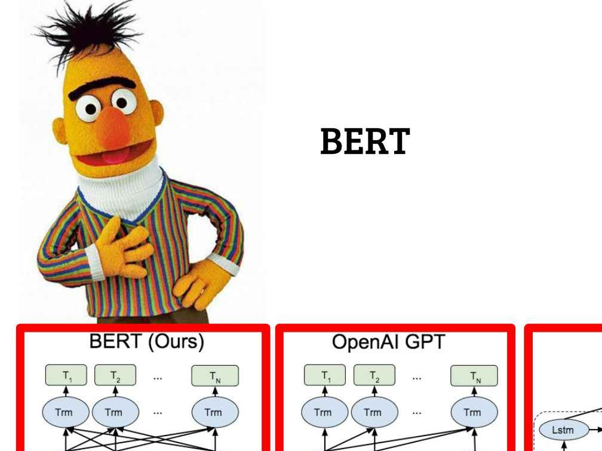

My Work
I've worked in projects ranging from Econometrics and Machine Learning to Historical Analysis! I've become increasingly interested in using Data Visualisation as a journalistic medium. All in for well-executed scrollys and interactives in data journalism stories!
 Housing Worth or Nah? - A Minerva Quest interactive data scrolly about housing costs at Minerva.
D3.JS
Housing Worth or Nah? - A Minerva Quest interactive data scrolly about housing costs at Minerva.
D3.JS

Capstone Data Visualisation - Created an interactive data viz tool for classmates to locate collaborators.
D3.JS

Natural Language Processing - Replicated CoronaTracker news sentiment analysis using BERT.
Google Colab
Bayesian Inference & Statistics - Modeled atmospheric CO2 forecasts using Mauna Loa Observatory Data.
Github
Interactive Digital Exhibit - Created an exhibit regarding the role of opium in Singapore's development.
StoryMap JS